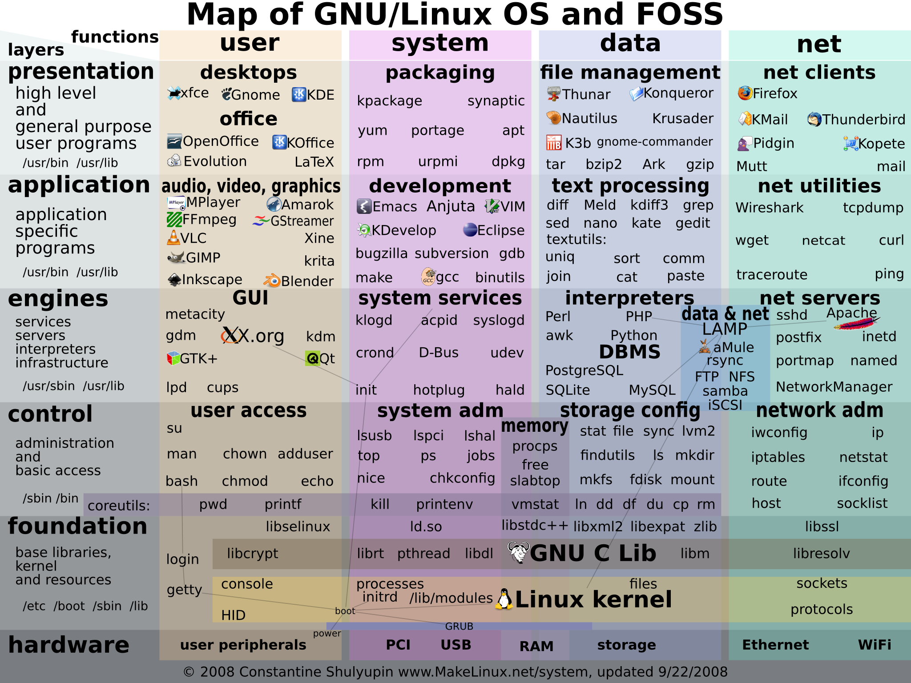
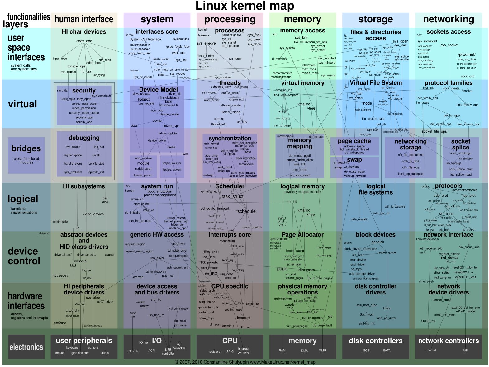

# System Complexity <div class="center"> **Gabe Parmer** © Gabe Parmer, 2024, All rights reserved </div> --- # 1️⃣ Software is hard # 2️⃣ Software must do hard things --- <div class="multicolumn"> <div> **Hardware**: electrical signals at the nanometer (near atomic) level. **System**: software to transform hardware into usable abstractions. **Applications**: What we build everything for. </div> <div> ```mermaid block-beta columns 1 block:Programs P0(["App"]) P1(["App"]) P2(["App"]) end space S["System"] space block:HW block C0["core"] C1["core"] end NIC SSD A["Accelerator"] end P0 --> S P1 --> S P2 --> S S --> HW ``` </div> </div> ---  [reference](https://panthema.net/2019/1122-Lines-of-Code-Plotted-over-Time/) --- ```mermaid xychart-beta title "Lines of Code in Different Systems" x-axis [FreeBSD, Android, Linux 2020, Windows 2003, OSX, Firefox, F35, Luxury car] y-axis "Million SLoC" 8 --> 110 bar [8, 15, 20, 50, 86, 10, 25, 100] ``` Debian software: 100s of Million SLoC ---  ---  --- ## What is software complexity? ## What causes it? --- ## Complexity Code- and system-level factors that make a system hard to *modify* and *understand*. - Complexity relates to *human capabilities in a system*. --- ## Causes of Complexity **State** presents a key complexity: - a set of $D$ data-structures, - a set of $A$ assumptions on those data-structures, and - a set of $O$ operations on them. New features means adding more **state** $D'$, assumptions $A'$, and operations $O'$. - $\forall o \in O'$ must be consistent with $D$ and $A$, - $\forall a \in A'$ must be consistent with $A$ and $O$. - For each operation *interleaving* ($O_n \times O_n, O_n = O \cup O'$) --- ## Causes of Complexity As systems grow, so do $D$, $A$, and $O$. - It is very difficult to maintain consistency. - For each operation, you must consider *all* operations, data-structures, & assumptions - quadratic complexity! - When learning a code-base: what are the assumptions? - most assumptions are *unstated and implicit* --- ## Causes of Complexity Additional perspectives on these causes: - *Dependencies* - Logical connections between different code. - Dependencies from: state & relationships between modules. - *Local* changes have *non-local impacts*. - Hard to maintain consistency of assumptions. - *Obscurity* - When important information is hard to understand. - How difficult is it to understand the system's assumptions? - ...and to maintain them with updates? -v- - ["No Silver Bullet"](http://worrydream.com/refs/Brooks-NoSilverBullet.pdf), by Brooks - ["Out of the tar pit"](https://curtclifton.net/papers/MoseleyMarks06a.pdf), by Moseley, et al. - "Philosophy of Software Design", Ousterhout --- ## Environmental Complexity The *functional behavior* in the specification is often not the full story. Other requirements: - Performance - Parallelism - Security - Reliability --- ## Case Study: kv-cache **Specification**: - Operations: - `get(k) -> v` return the value associated with the key - `set(k, v) -> bool` update or add a value associated with the key --- ## Impl 1: Simplicity - Data-structures: - open-addressed, statically allocated, hash-table, with kvs inlined - Assumptions: - fixed size keys & values - static allocation of hash-table and kv slots - single concurrent operation at a time - LRU tracked using kv access times --- ## Impl 2: Fast - Data-structures: - separate-chained, concurrent hash-table, with lock-protected, partitioned LRU lists - Assumptions: - each KV associated with a HT bucket & LRU list - each HT bucket associated with a lock - each LRU list associated with a lock - hash to find HT and LRU lists - updating KV requires locking corresponding HT & LRU list (in that order) --- ## Updates to the kv-cache Update environment: - Security: What if we care about [hash](https://bugs.python.org/issue14621) [attacks](https://fahrplan.events.ccc.de/congress/2011/Fahrplan/events/4680.en.html)? - Parallelism & workloads: - mostly `get`s: avoid 🔒s - many `set`s: optimize for set ops Update spec: - Require operation to set cache memory size - Enable `multiset({(k, v)}) -> bool` **Complexities with the two implementations?** --- ## Simple implementation: update cache's memory size Fundamental assumptions are incompatible with this! - Statically allocated HT? 🤦 --- ```c [1-3|8|12-13] /* Add multiset to the fast kv implementation. */ int multiset(struct kv kvset[]) { int i; struct kv *kv; for (i = 0; kvset[i] != NULL; i++) { int err; kv = &kvset[i]; err = set(kv->key, kv->val); if (err) return err; } return 0; } ``` --- ## Should `multiset` be atomic? Should it set all kvs or none? If not, then two clients calling: - `multiset({(a, b), (c, d)})` - `multiset({(a, e), (c, f)})` Could result in: - `{(a, b), (c, f)}` Neither client asked for this! Hard to get right in the fast version! --- ```c [7-11|14-18|10] int multiset(struct kv kvset[]) { int i; struct kv *kv; /* first take all the locks for our kvs */ for (i = 0; kvset[i] != NULL; i++) { kv = &kvset[i]; lock(&hash_table[hash(kv->key)].lock); } /* update the values, and release their locks */ for (i = 0; kvset[i] != NULL; i++) { kv = &kvset[i]; set_nolock(kv->key, kv->val); unlock(&hash_table[hash(kv->key)].lock); } return 0; } ``` --- ## Bug: Deadlock Two parallel threads might take a locks in a bad order | Step | Thread | Take lock at... | Result | |---|----------|-----------------|--------| | 0 | $\tau_0$ | `hash_table[0]` | 🔒 | | 1 | $\tau_1$ | `hash_table[1]` | 🔒 | | 2 | $\tau_0$ | `hash_table[1]` | ⏱️...wait for $\tau_1$ | | 3 | $\tau_1$ | `hash_table[0]` | ⏱️...wait for $\tau_0$ 💥 **Deadlock** | --- ## Bug: Deadlock Requires adding another assumption, and operation complexity - If we must take multiple kv bucket locks, they must be taken for lower indices in the hash-table to higher-indices. How does this interplay with assumptions around the LRU lock? --- # Complexity Properties --- ## Is Complexity Necessary? **Essential/Intrinsic Complexity** - The inherent complexity of a task. This is a function of the *specification complexity*, and of the *problem to be solved*, not of implementation details. --- ## Is Complexity Necessary? **Accidental Complexity** - Complexity that goes beyond the specification. Often due to... - mismatch between system abstractions and tasks, - friction of the task with the assumptions of existing software, - the over-generalization to solve problems beyond the task, or - the optimization of the system. > "...we have to keep it crisp, disentangled, and simple if we refuse to be **crushed by the complexities of our own making**...” - Dijkstra, EWD1243 --- ## Working code *isn't enough* Primary goal: write *well-designed* code to avoid accidental complexity - Investment mindset --- ```mermaid xychart-beta title "Just Get it Working 💩" x-axis "Time" 1 --> 10 y-axis "Working Features" 0 --> 11 line [0,0,0,0,0,0,0,0,0,0] line [1, 2.7, 4.4, 5.2, 6, 6.2, 6.2, 5.8, 5.4, 4.8] ``` -v- *Technical debt*: The rate of change decrease, and negative progress --- ```mermaid xychart-beta title "Investing in Design" x-axis "Time" 1 --> 10 y-axis "Working Features" 0 --> 11 line [0,0,0,0,0,0,0,0,0,0] line [1, 2.7, 4.4, 5.2, 6, 6.2, 6.2, 5.8, 5.4, 4.8] line [1, 2, 3, 4, 5, 6, 7, 8, 9, 10] ``` --- ```mermaid xychart-beta title "Learning and Updating Design" x-axis "Time" 1 --> 10 y-axis "Working Features" 0 --> 11 line [0,0,0,0,0,0,0,0,0,0] line [1, 2.7, 4.4, 5.2, 6, 6.2, 6.2, 5.8, 5.4, 4.8] line [1, 2, 3, 4, 5, 6, 7, 8, 9, 10] line [1, 2.2, 3.4, 3.4, 4.6, 5.8, 5.8, 7.0, 8.2, 8.2] ``` # Technical Debt What is this? Examples? --- ## Technical Debt The sheer "weight" of the software. - *Massive SW* - As SW becomes larger, the more likely it is that a new feature will cause friction with existing assumptions. - *Unrelated assumptions* - Especially assumptions, unwieldy operations and data-structures *unrelated* to the essential complexity. - *Edge cases* - The more assumptions we create that are unrelated to essential complexity, the more edge cases we cover, the more *technical debt* that future modifications must endure. --- # Technical Debt Why not just **not** create technical debt? --- ## Accidental Complexity Mismatch between abstraction-level and specifications: | Abstraction | Task | Misalignment | |-----------------------|--------------------------|---------------------------| | FS file/directory API | SQL per-record semantics | Abstractions mismatched | | Best-effort scheduler | Real-time system | Abstractions not provided | | Simple RTOS | Webserver | Abstractions inadequate | **Semantic gap** - distance between what is provided by the system, and what is required to accomplish a task. - contortions within your code to approximate correct behavior $\to$ *accidental complexity* --- # *Managing* System Complexity? Systems with many 10s of M of SLoC seem to work. *What gives?* --- ## SLoC $\neq$ Complexity The cognitive code is correlated with, but not a direct function of SLoC. *Foreshadowing*: code structure matters. --- ## Choose your own Adventure > “I conclude that there are two ways of constructing a software design: One way is to **make it so simple that there are obviously no deficiencies** and the other way is to make it so complicated that there are no obvious deficiencies. **The first method is far more difficult**.” - Hoare --- ## Simplicity But simple isn't always possible. - `xv6` - Simple UNIX variant (circa 1976) - `plan9` - System leans in on synergy - `minix` - simple microkernel How? Avoid generalization of code. - Aggressively remove edge-cases. - Focus on core requirements specification. - Focus on enabling simple abstractions to be combined in useful ways. A *goal*, not always possible. --- # *Managing* Complexity: **Abstraction** --- ## Abstraction *Abstraction*: lets us ignore problems/complexity that aren't relevant to our task at hand. | Goal | Abstraction 👍 | Abstraction 👎 | |------|------------------|------------------| | Persistence | FS API | SSD, Interrupts, Driver, DMA | | UI | DOM Manipulation | Rasterization, Compositing, GPU | | Web server | HTTP Routes & templating | network programming, string manipulations | --- ## Design to Constrain Complexity Add *structure* to the system. - Abstraction - Interfaces to constrain state-machines - Modularity - Separation of concerns through encapsulation/information hiding But how to organize the modules? - Complexity related to inter-module dependencies --- ## Design to Constrain Complexity Constrain $N^2$ complexity of module interconnections. - *Layering* - Layer $i$ interacts only with $i$ and $i+1$ layers - *Hierarchy* - Modules arranged WRT dependency relationships - interfaces separate modules Interfaces = core of system design --- ## Interface Design - Wide vs. Narrow - Composition - Separation of Concerns/Orthogonality - Separation of mechanism and policy - Liveness/Ownership - Thread safety/reentrancy - Algebraic properties: idempotency, commutativity, associativity, monotonicity, lattices - Simplicity/Principle of least astonishment - Principle of Least Privilege - Non-interference --- ## System Interface and Component Design 1. resources - Interface-defined interactions between resources 2. namespace management 3. bindings